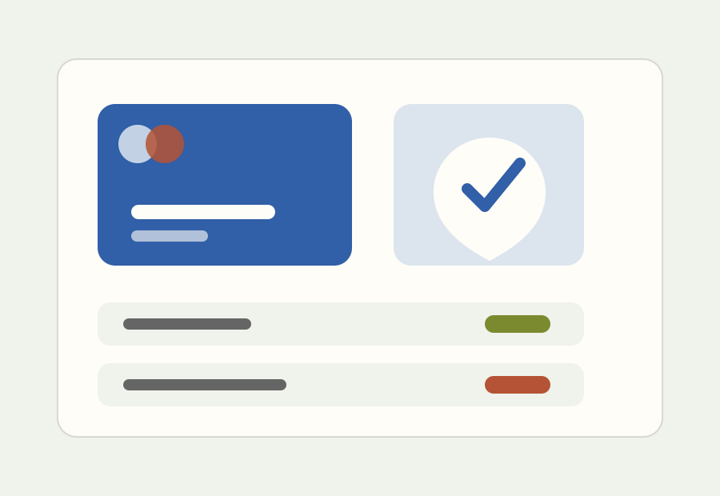

Policy Engine
Transaktionen werden vor Freigabe gegen Budget, Rollen und Risiko geprueft.
Secure Payments
Cipher Pay verbindet Freigaben, Karten und Risikoregeln in einem System fuer Finanzteams mit hohen Sicherheitsanspruechen.

Security
Die Seite priorisiert Risk, Compliance und Kontrolle, weil Fintech-Entscheider vor allem Sicherheit kaufen.
Transaktionen werden vor Freigabe gegen Budget, Rollen und Risiko geprueft.
Jede Entscheidung bleibt nachvollziehbar fuer Finance, Legal und Security.
Virtuelle Karten lassen sich nach Team, Anbieter und Betrag begrenzen.
"Cipher Pay gab uns Kontrolle, ohne die Einkaufsprozesse langsamer zu machen."
Head of Finance, SaaSReview
Ein Security-Review-CTA passt zur Kaeuferlogik und macht die naechste Aktion konkret.